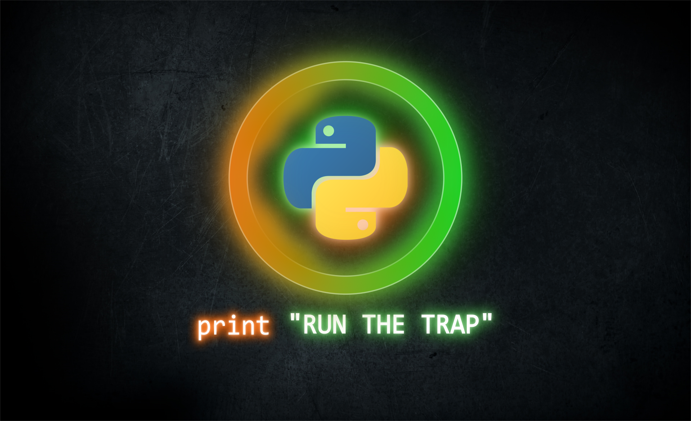
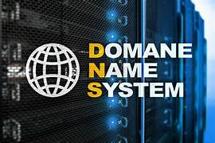

Mon projet professionnel est de devenir ingénieur dans le domaine des réseaux et télécommunications, un secteur qui me passionne en raison de son importance dans la connectivité et la sécurité des infrastructures modernes. Actuellement en troisième année de BUT, je me concentre sur l’acquisition de compétences techniques solides en conception, gestion et sécurisation de réseaux. Pour approfondir mes connaissances et élargir mon expertise, je souhaite intégrer un Master en Télécommunications dès la rentrée 2025. Mon objectif est de contribuer activement à la mise en place de solutions réseau robustes et performantes, en répondant aux enjeux technologiques actuels et futurs. Grâce à cette formation, je compte développer mes compétences en analyse, supervision et pilotage d'infrastructures critiques, tout en participant à l’évolution des systèmes de communication.
Projets Terminés
Stage à l'entreprise Future Networx
Consiste à analyser et suivre les KPI du réseau cœur 5G afin d’évaluer la qualité de service, détecter les anomalies et optimiser les performances, en s’appuyant sur des outils de supervision et des techniques d’analyse avancées.

Programmation en python
Implique à écrire du code en utilisant ce langage polyvalent, reconnu pour sa simplicité et sa puissance, afin de développer des applications web, des scripts, de l’intelligence artificielle, de l’analyse de données et bien plus encore.
Gnu radio
C'est un logiciel libre permettant de concevoir et simuler des systèmes de communication radio en utilisant des blocs de traitement du signal, souvent utilisé dans la recherche et l’expérimentation en radiofréquence..

Sécurisation DNS
Repose à protéger le système de noms de domaine contre les attaques, telles que l'empoisonnement du cache et l'interception des requêtes, en utilisant des techniques comme DNSSEC, le chiffrement des requêtes (DoH, DoT) et l'authentification des données.
Test d'intrusion
Consiste à simuler des attaques sur un système pour identifier ses vulnérabilités et permettre leur correction avant qu'elles ne soient exploitées par des attaquants réels..

Projet multimédia
Consiste à concevoir et produire du contenu interactif combinant texte, image, son, vidéo et animation pour des supports numériques comme les sites web, applications, jeux ou présentations interactives.
Automatisation des services
Consiste à utiliser des outils et des scripts pour exécuter automatiquement des tâches répétitives, améliorer l'efficacité des processus et réduire les erreurs humaines dans la gestion des systèmes et des services.